Which routing family does OSPF belong to?
- BGP.
- RIP and EIGRP.
- OSPF is dynamic.
- OSPF floods link costs and runs Dijkstra.
How routers fill their tables: the internet as a weighted graph, static vs. dynamic routing, host-specific, network-specific and default routes, forwarding with masks (longest mask first), distance-vector (Bellman-Ford) vs. link-state (Dijkstra) routing, and autonomous systems with interior (RIP, OSPF, EIGRP) and exterior (BGP) protocols. Rebuilt from the highlighted copy of the deck until a clean one is uploaded, so a few figures show light highlighting.
Every original slide is shown unchanged. Yellow marks on a slide point to a numbered note: hover or tap a mark to jump to its note, and hover a note to see its marks. Questions tagged Past exam appeared on a real paper; Prediction questions are likely angles, not confirmed. Pick an answer to each question: a wrong pick tells you why it is wrong, so you can try again.
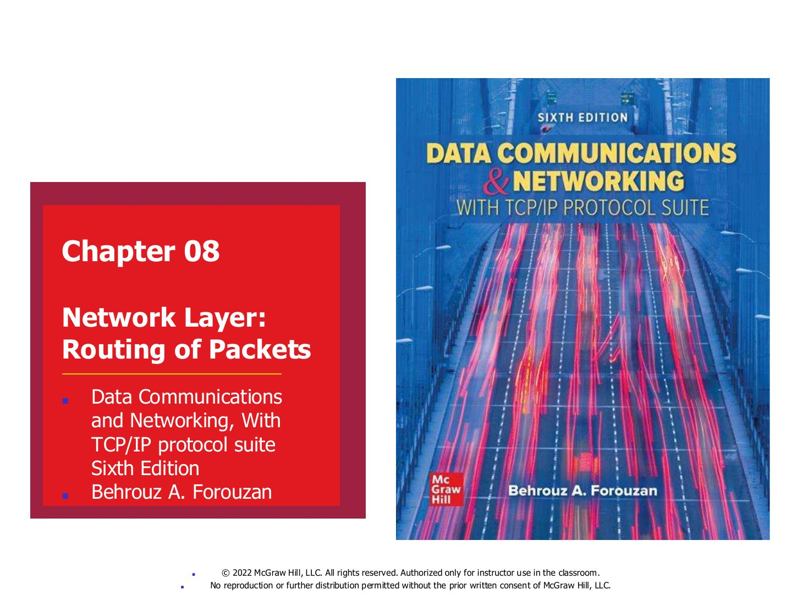
Chapter 7 showed how one packet is forwarded; this chapter shows how routers build the tables that make forwarding possible. The order: routing vs. forwarding; the internet as a weighted graph; static vs. dynamic routing; ways to keep tables small (network-specific, host-specific and default routes); forwarding with masks and the longest-prefix rule; the two shortest-path families, distance vector (Bellman-Ford, e.g. RIP) and link state (Dijkstra, e.g. OSPF); and autonomous systems with interior and exterior (BGP) routing. Expect forwarding-table walk-throughs and a DV vs. LS comparison.
Which routing family does OSPF belong to?
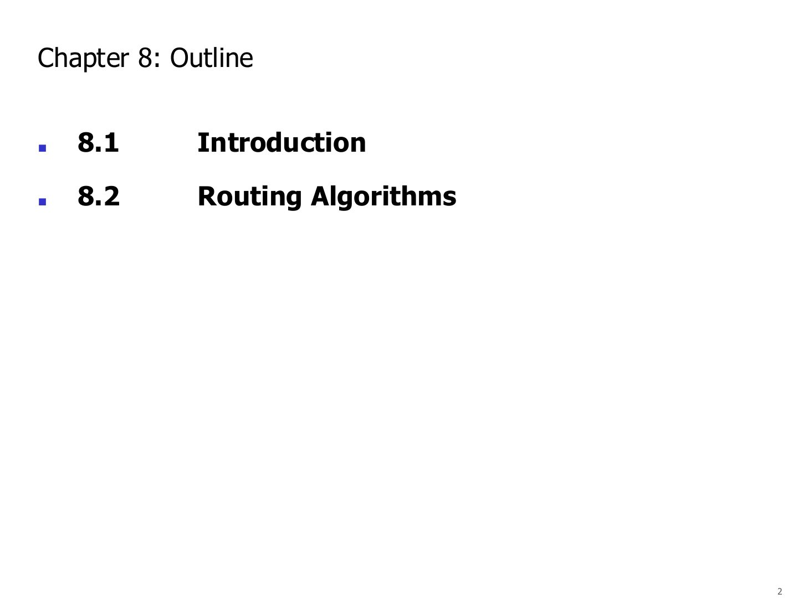
Two sections: 8.1 introduction (the general idea, graphs, static vs. dynamic routing, routing tables and forwarding) and 8.2 routing algorithms (distance vector, link state, and autonomous systems).
Which section covers distance vector and link state?
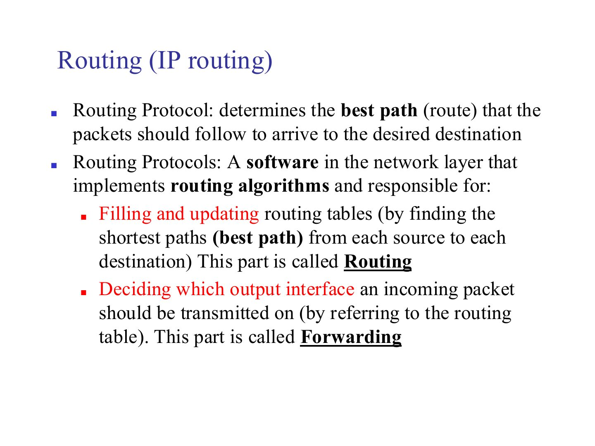
A routing protocol is software in the network layer that implements a routing algorithm. It has two jobs. Routing: filling and updating the routing tables by finding the best (shortest) path from each source to each destination. Forwarding: deciding which output interface each incoming packet goes out of, by looking up the routing table. Routing builds the table; forwarding uses it.
Seen again Ch 7, slide 5: Routing vs. forwarding
Filling and updating routing tables by finding best paths is called:
Which statement about a routing protocol is correct?
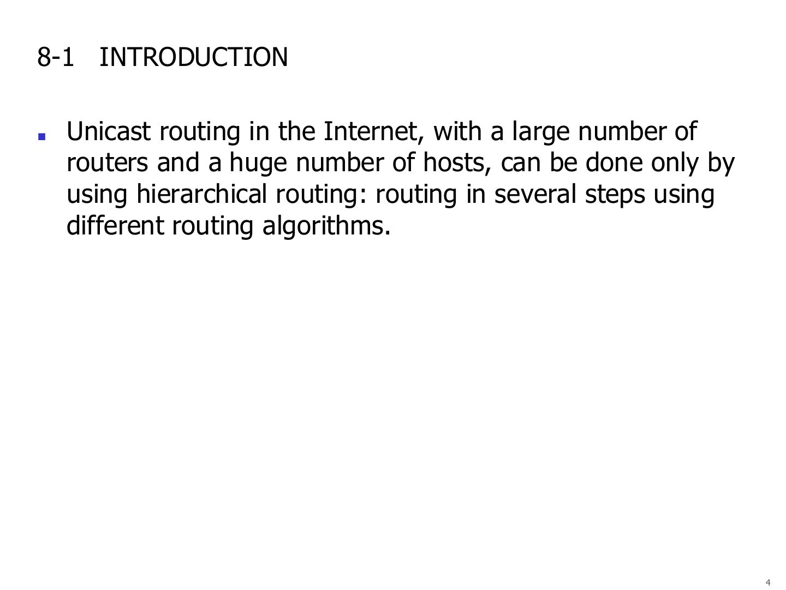
The Internet has a huge number of routers and hosts, far too many for every router to know a path to every network by one single algorithm. So unicast routing is done hierarchically: in several steps, with different algorithms at different levels (inside each autonomous system, and between autonomous systems; see slide 34).
Why is Internet routing hierarchical?
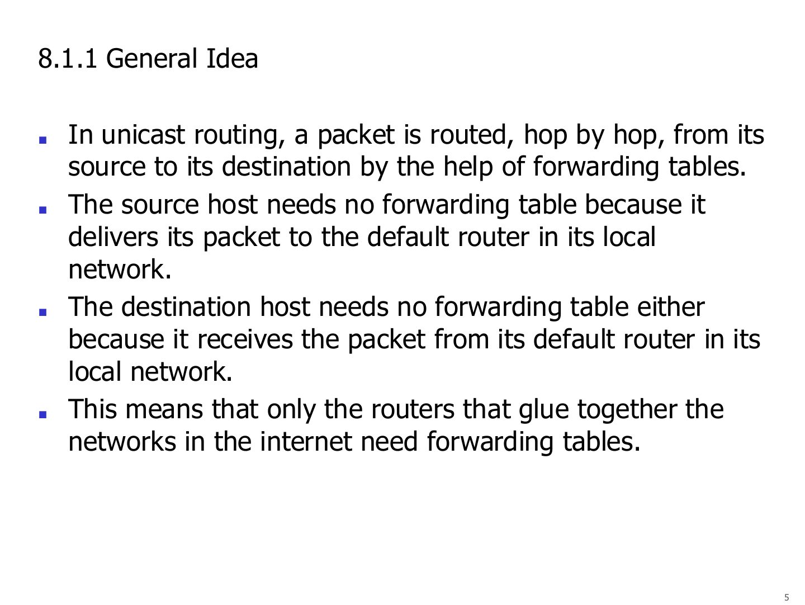
In unicast routing a packet moves hop by hop from source to destination, each router using its forwarding table. The source host doesn’t need a forwarding table: it just sends any packet for another network to its default router. The destination host doesn’t need one either: it receives the packet from its own default router. So only the routers that join the networks together need real forwarding tables.
Why doesn’t a source host need a full forwarding table?
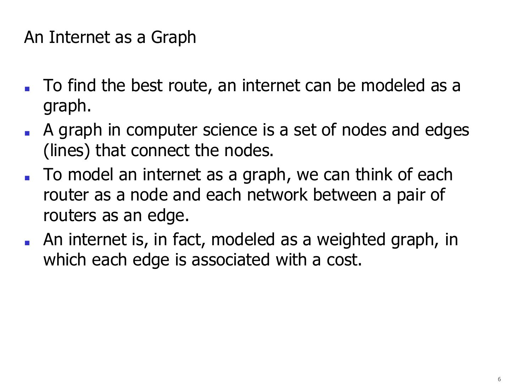
To find the best route, an internet is modelled as a graph: a set of nodes connected by edges. Each router is a node, and each network between two routers is an edge. Each edge also has a cost, so it is a weighted graph. Finding the best route then becomes a standard graph problem: finding the least-cost path.
In the graph model of an internet, routers are:
Why is an internet modelled as a weighted graph?
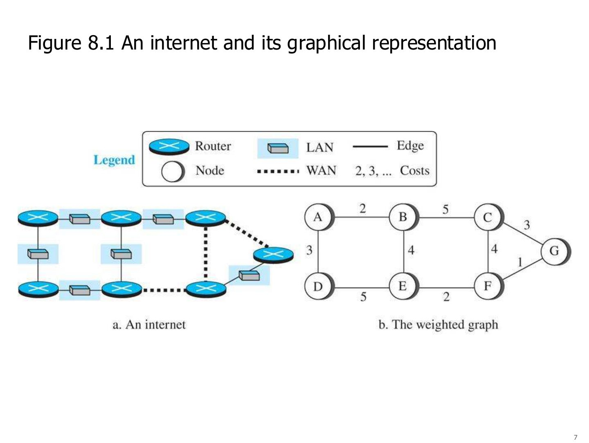
The figure turns a real internet (routers and LANs) into a weighted graph with nodes A to G and a cost on each edge. The same graph is used in all the distance vector and link state examples later, so it is worth getting familiar with it.
In the A–G graph, what does a number on an edge represent?
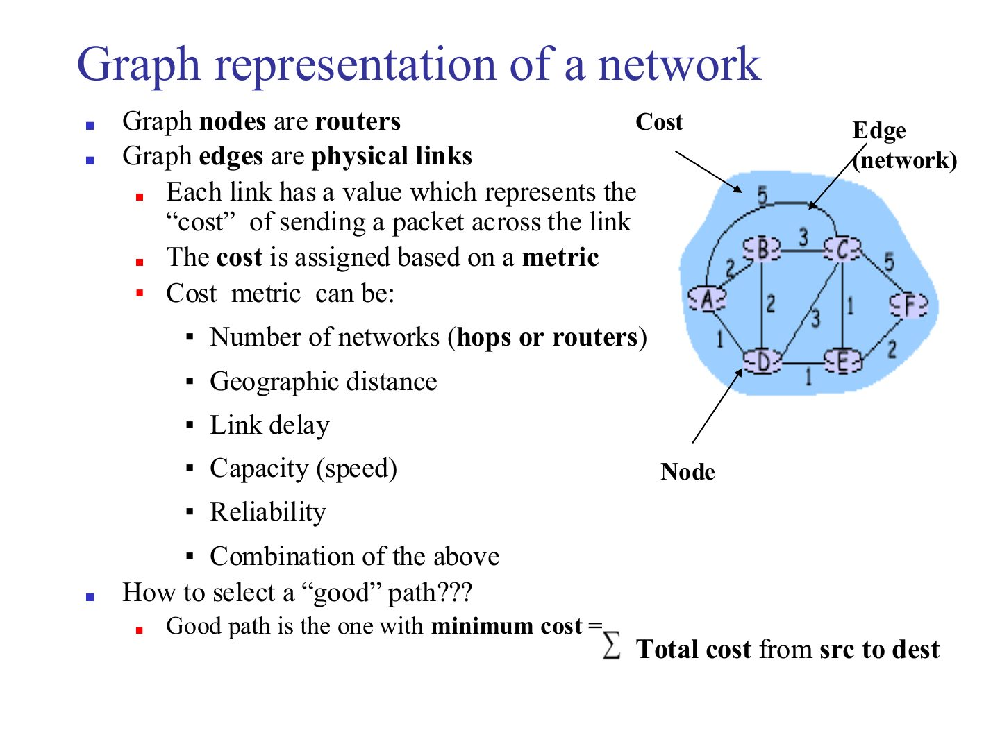
The cost comes from a metric, which can be: the number of hops (routers or networks crossed), geographic distance, link delay, capacity (speed), reliability, or a combination. Different routing protocols use different metrics (RIP counts hops; OSPF usually uses bandwidth). A good path is the one with the minimum total cost from source to destination: the sum of the costs of all its links. A path with more hops can still be the best if its links are cheaper.
Which is NOT listed as a possible link cost metric?
A good path is the one with:
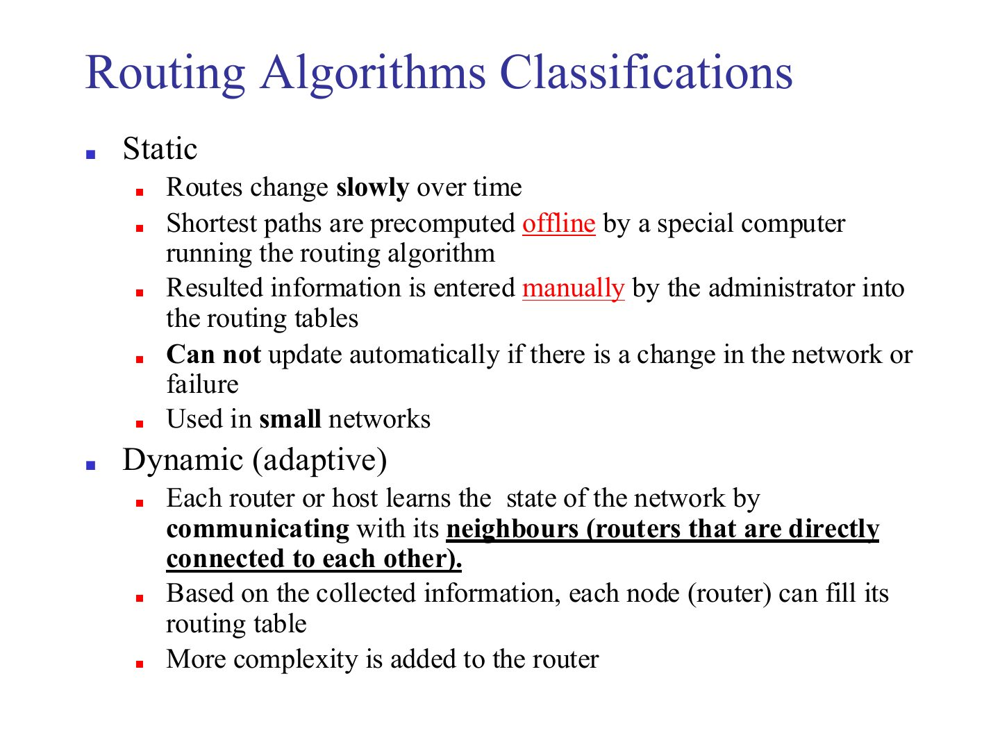
Static routing: routes change slowly over time. Shortest paths are computed offline by a special computer running the routing algorithm, and the results are entered manually by the administrator into the routing tables. It can’t update automatically if the network changes or a link fails; someone has to edit the tables. It suits small networks.
Dynamic (adaptive) routing: each router learns the state of the network by communicating with its neighbours (the routers directly connected to it), and fills its own routing table from what it learns. It adapts automatically to changes and failures, at the cost of more complexity in the router (more processing, memory and protocol traffic).
Trap Static routes do NOT update automatically after a failure.
Static routing updates automatically when a link fails.
Compare static and dynamic routing.
Static: shortest paths are computed offline and entered manually by the administrator; they change slowly, can’t adapt to failures, and suit small networks. Dynamic: each router learns the network state by talking to its neighbours and fills its own table automatically, adapting to changes, at the cost of more router complexity.
What is the cost of dynamic routing?
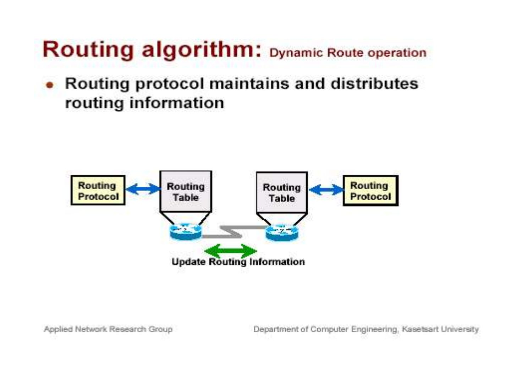
In dynamic routing, the routing protocols on neighbouring routers maintain and exchange routing information: each router sends updates to its neighbours, and each uses the updates it receives to keep its own routing table current.
In dynamic routing, what do neighbouring routers exchange?
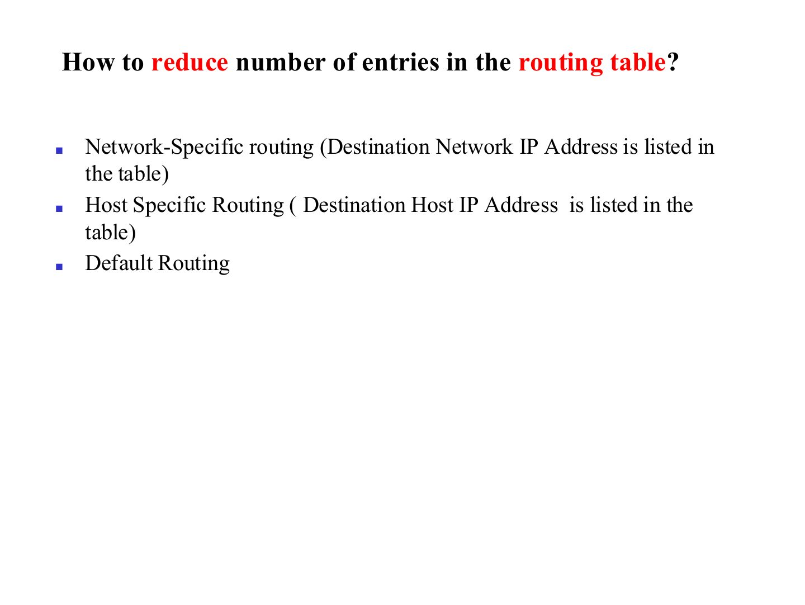
Three ways to control what goes into the routing table. Network-specific routing lists a destination network (one row covers every host on it). Host-specific routing lists a single destination host (used when one host needs a special path). Default routing provides one row that covers every destination not listed. Network-specific and default routes keep the table short.
Which method keeps one row for every destination not listed?
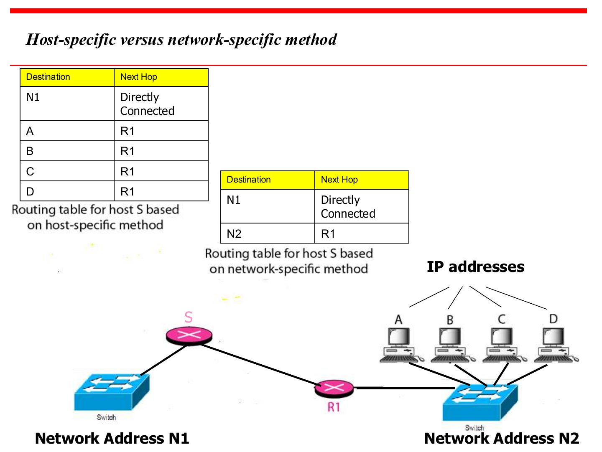
With host-specific routing, router S’s table needs a row for every host on network N2 (A, B, C, D, each via R1). With network-specific routing, one row for N2 via R1 covers all of them, so the table is much smaller. Host-specific rows are only worth having for special cases, such as testing or security.
Listing one entry for a whole destination network instead of each host is:
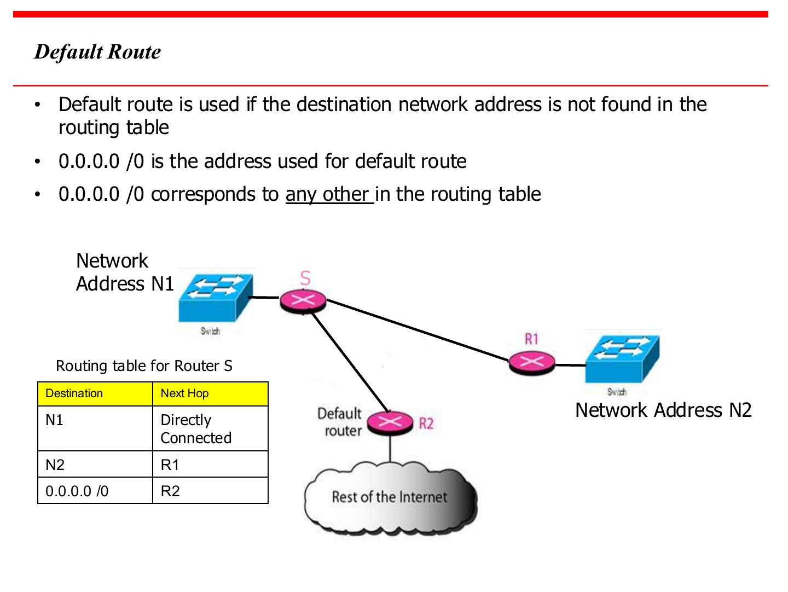
The default route is used when the destination’s network isn’t found in the routing table. It is written 0.0.0.0/0: a mask of /0 matches every address, so this row covers “any other destination”. In the example, router S sends traffic for N1 directly, traffic for N2 to R1, and everything else (the rest of the Internet) to R2.
The default route is written as:
In router S’s table, where does a packet for an unlisted network go?
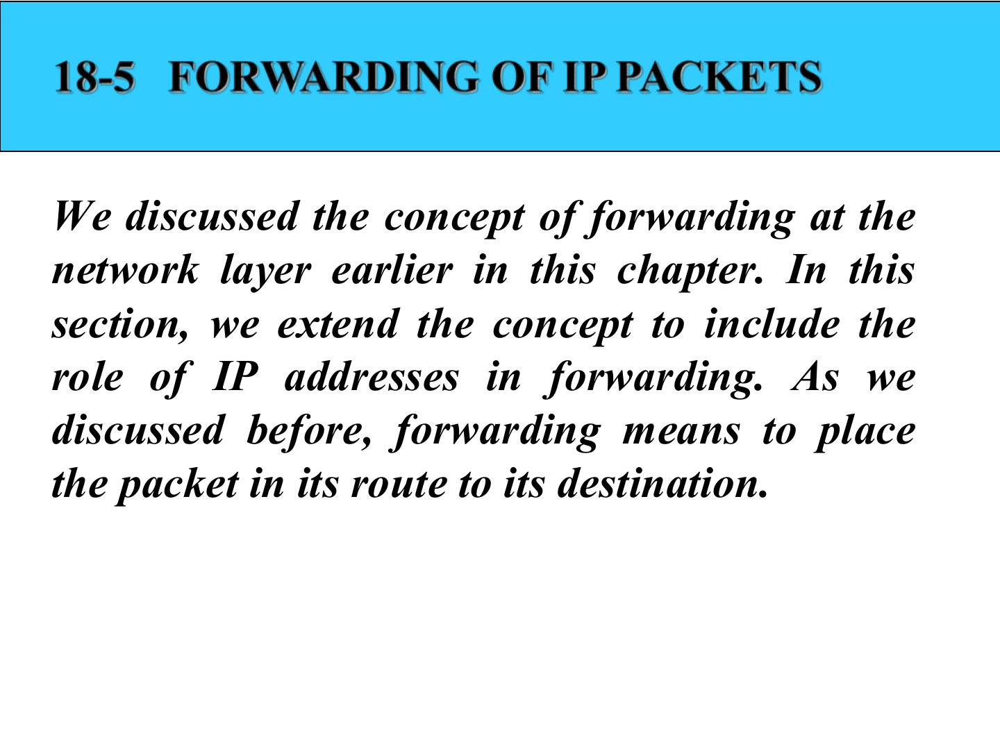
Forwarding means placing a packet on its route to its destination. This section adds the role of IP addresses: the router uses the destination address and the masks in its table to pick the next hop.
Forwarding means:
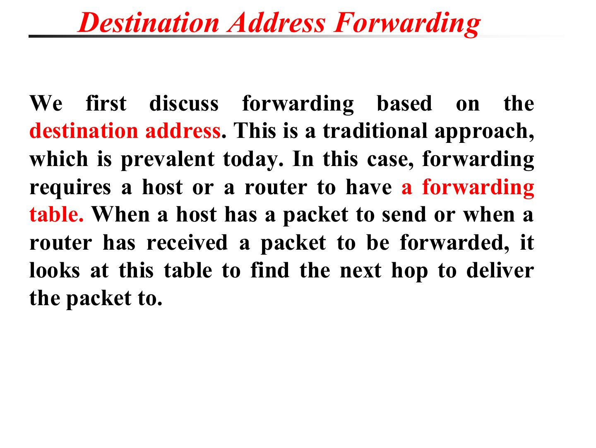
Destination-address forwarding, the traditional approach used today: when a host has a packet to send, or a router receives one to pass on, it looks up the destination address in its forwarding table to find the next hop (and the interface to reach it).
In destination-address forwarding, the router looks up:
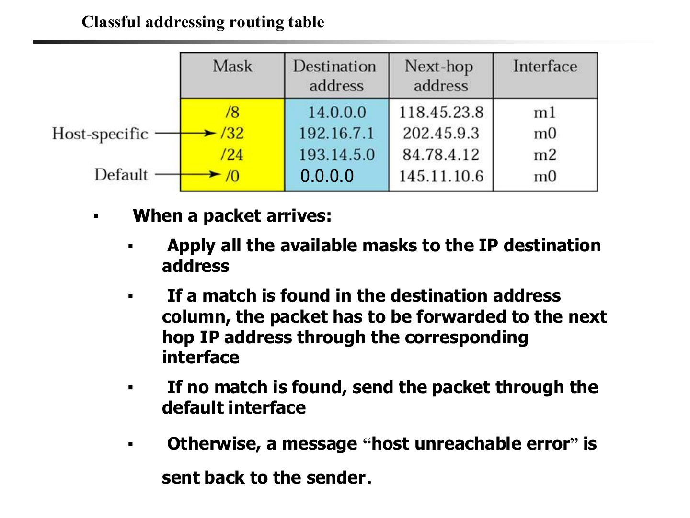
How a router uses a table with masks: for each row, it applies the row’s mask to the destination address (AND) and compares the result with the row’s destination. If it matches, it forwards the packet to that row’s next hop through its interface. If no specific row matches, it uses the default row. If there is no default either, it sends a “host unreachable” error back to the sender (with ICMP). In this table, the /32 row is a host-specific route (all 32 bits must match one address) and the /0 row is the default.
What happens if no row matches and there is no default route?
A /32 row in a routing table is a:
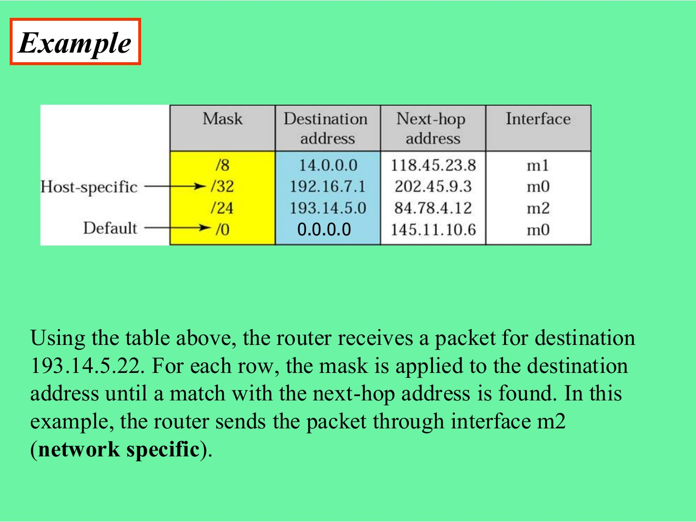
Destination 193.14.5.22: apply each mask in turn. With /24, 193.14.5.22 AND 255.255.255.0 = 193.14.5.0, which matches the 193.14.5.0/24 row, so the packet goes out through interface m2. This is a network-specific match.
Using the table, a packet for 14.5.6.7 leaves through:
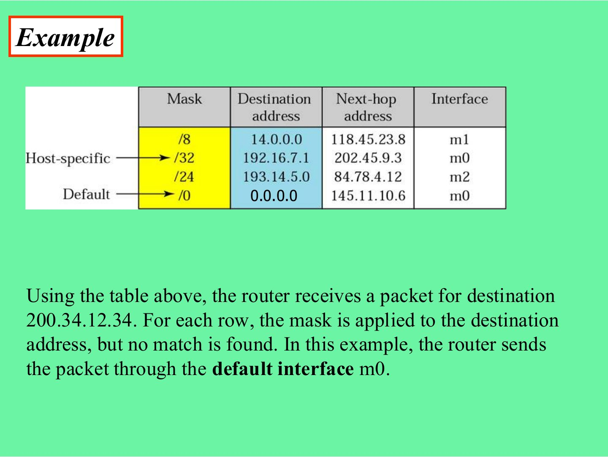
Destination 200.34.12.34: applying each row’s mask gives no match with any listed destination, so the router uses the default row and sends the packet out through m0.
A packet for 200.34.12.34 matches none of the rows. It leaves through:
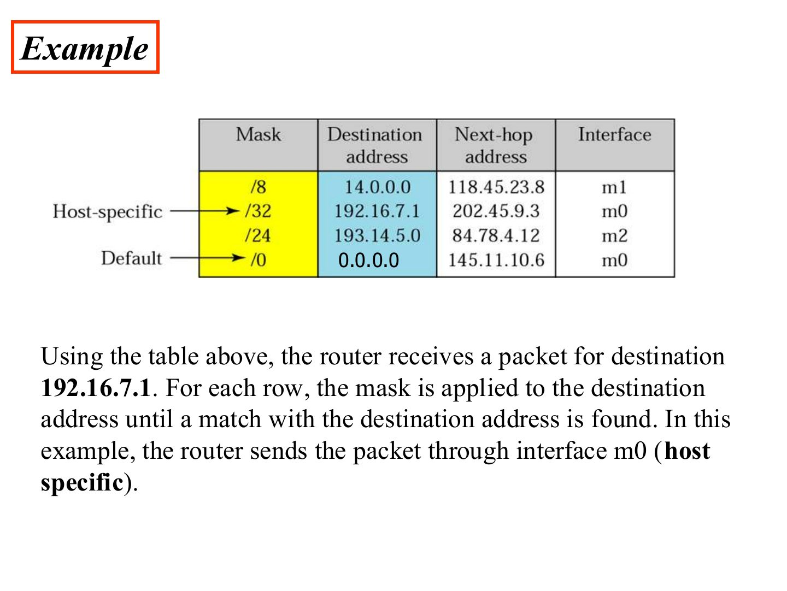
Destination 192.16.7.1: it matches the /32 row exactly (every bit equal), so the packet goes out through m0. This is a host-specific match: the route applies to that one host only.
A packet for 192.16.7.1 leaves through m0 because:
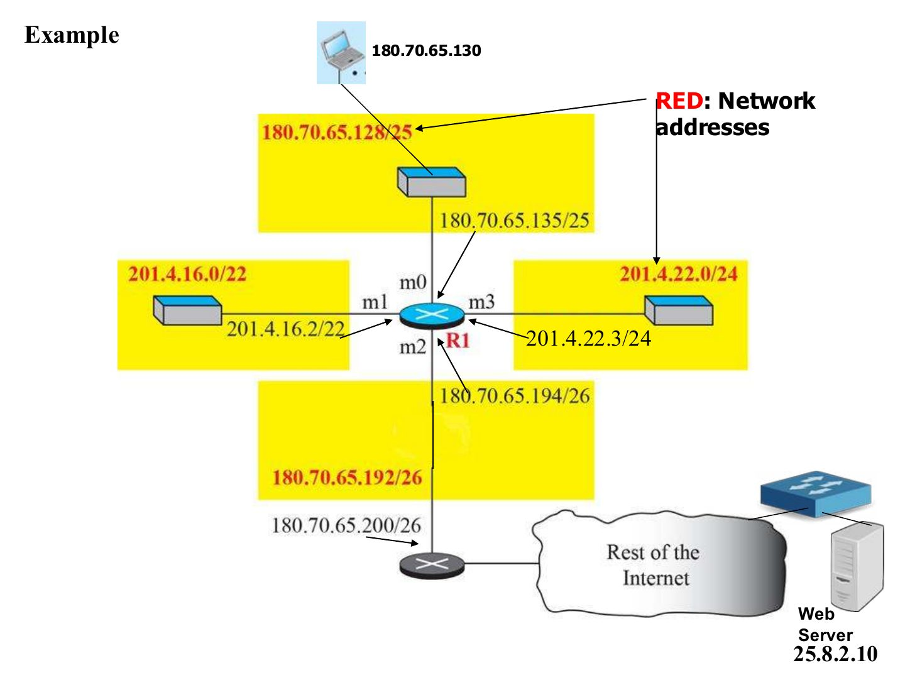
Router R1 has four interfaces, each attached to a network: m0 to 180.70.65.128/25, m1 to 201.4.16.0/22, m2 to 180.70.65.192/26, m3 to 201.4.22.0/24. The rest of the Internet is reached through another router, 180.70.65.200, on m2’s network.
How does R1 reach the rest of the Internet?
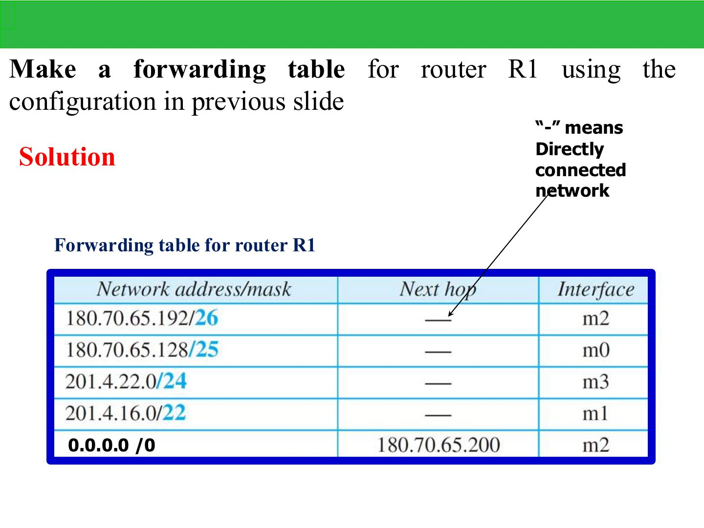
R1’s forwarding table. The rows are sorted from the longest mask to the shortest: /26, /25, /24, /22, with the default 0.0.0.0/0 last. A “–” in the next-hop column means the network is directly connected (deliver straight to the destination host). The router tries the rows in order and uses the first match, which is always the longest matching prefix: the most specific route wins, and the default is only used when nothing else matches.
Memory trick Longest prefix first, default last.
Why are R1’s rows sorted from the longest mask to the shortest?
A “–” in the next-hop column means:
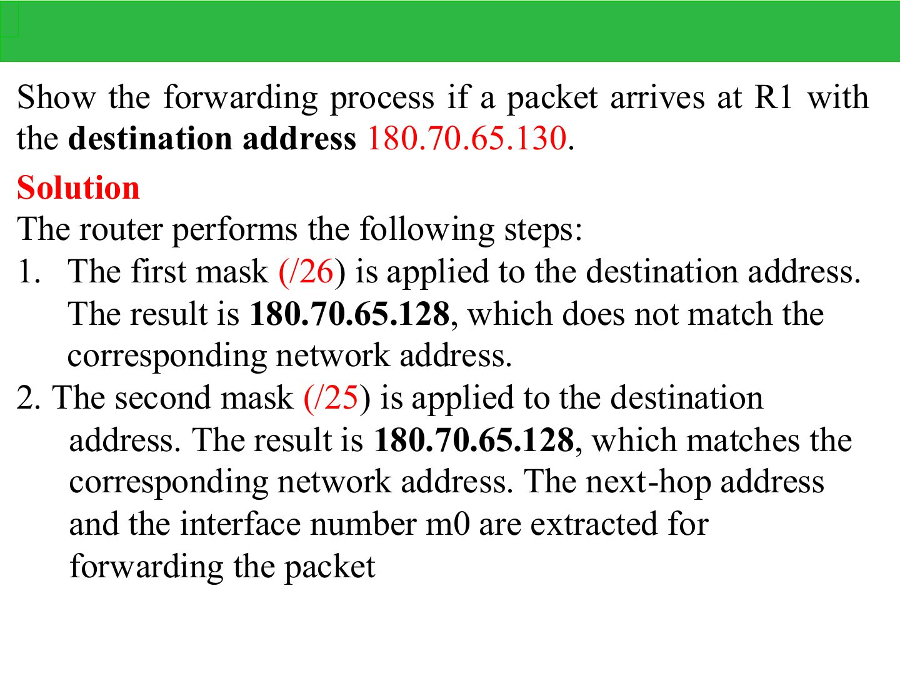
Destination 180.70.65.130. (1) Apply /26: 130 AND 192 = 128, giving 180.70.65.128, but this row is for 180.70.65.192, so no match. (2) Apply /25: 130 AND 128 = 128, giving 180.70.65.128, which matches the /25 row, so the packet goes out through m0 (directly connected, so straight to the host). The same method with 201.4.22.35: /26, /25 fail; /24 gives 201.4.22.0, a match, so m3.
Using R1’s table, a packet for 201.4.22.35 leaves through:
Using R1’s table, a packet for 201.4.18.7 leaves through:
Using R1’s table, a packet for 180.70.65.200 leaves through:
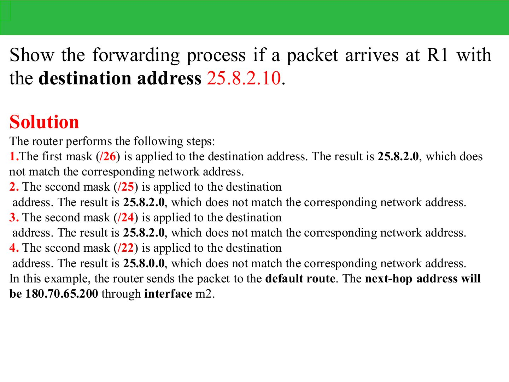
Destination 25.8.2.10. Apply /26 → 25.8.2.0 (no match); /25 → 25.8.2.0 (no); /24 → 25.8.2.0 (no); /22 → 25.8.0.0 (no). Nothing matches, so the router uses the default route: next hop 180.70.65.200, through interface m2. Writing out every step like this is how the exam expects the answer.
R1 receives a packet for 25.8.2.10. Walk through the forwarding steps.
Apply /26 → 25.8.2.0 (no match), /25 → 25.8.2.0 (no), /24 → 25.8.2.0 (no), /22 → 25.8.0.0 (no). Nothing matches, so the default row 0.0.0.0/0 is used: send to next hop 180.70.65.200 through interface m2.
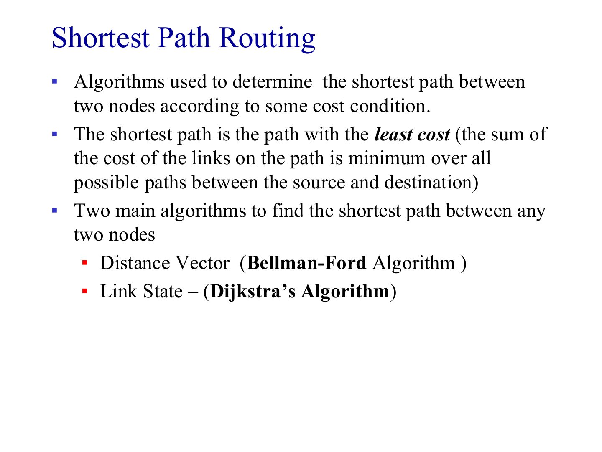
Shortest-path routing algorithms find the path between two nodes with the least cost: the path whose link costs add up to the smallest total among all possible paths. There are two main families: distance vector, based on the Bellman-Ford algorithm, and link state, based on Dijkstra’s algorithm.
Link-state routing uses which algorithm?
Distance-vector routing is based on:
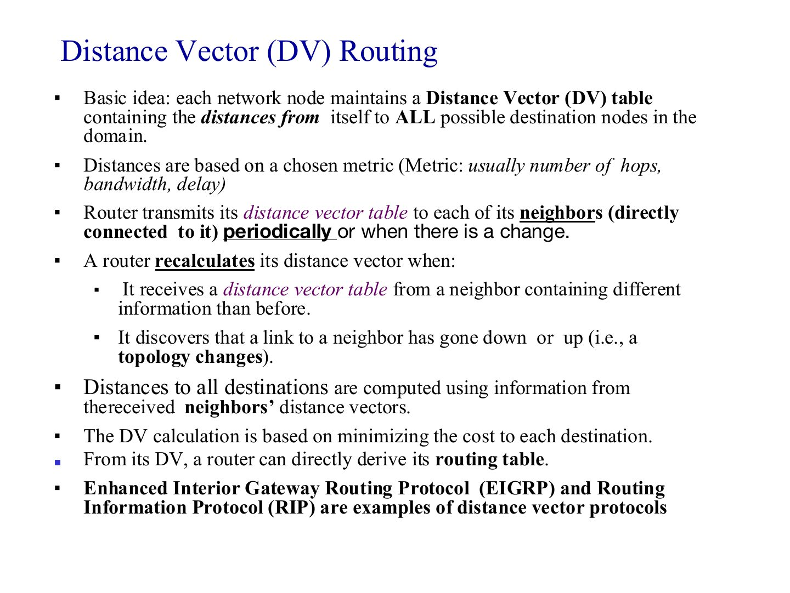
In distance vector (DV) routing, each router keeps a distance vector table: its current distance to every possible destination in the domain, measured by the chosen metric (often hops, or bandwidth, or delay). It sends this whole vector to its neighbours (directly connected routers) periodically, or when something changes.
A router recalculates its vector when it receives a neighbour’s vector with different information than before, or when it notices that a link to a neighbour has gone down or up (a topology change). The new distances come from the neighbours’ vectors, choosing the cheapest option for each destination, and the routing table follows directly from the vector.
Examples of distance vector protocols: RIP (Routing Information Protocol) and EIGRP (Enhanced Interior Gateway Routing Protocol). Memory aid: DV = tell your neighbours about the whole world; LS = tell the whole world about your neighbours.
Memory trick DV = “tell your NEIGHBOURS about the WHOLE world”. LS = “tell the WHOLE world about your NEIGHBOURS”.
Which is a distance-vector protocol?
In distance vector routing, a router sends its vector to:
When does a DV router recalculate its vector?
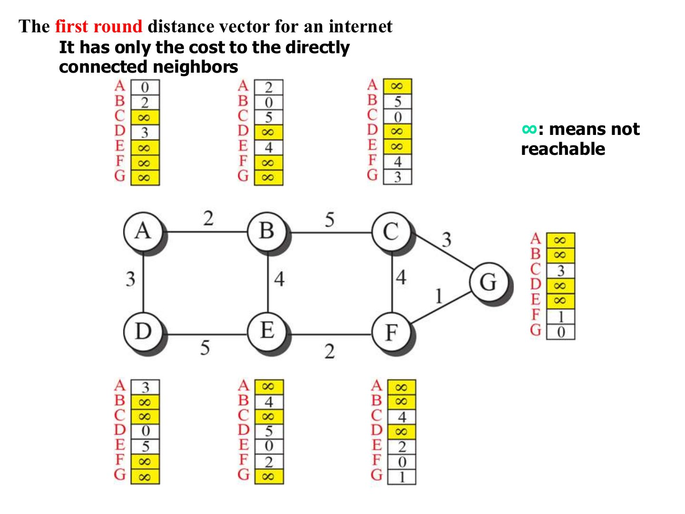
Round 1: each node knows only the cost to its directly connected neighbours; every other destination is ∞ (unreachable, as far as it knows yet). The vectors then improve round by round as neighbours exchange them.
In the first round of DV, what does each node know?
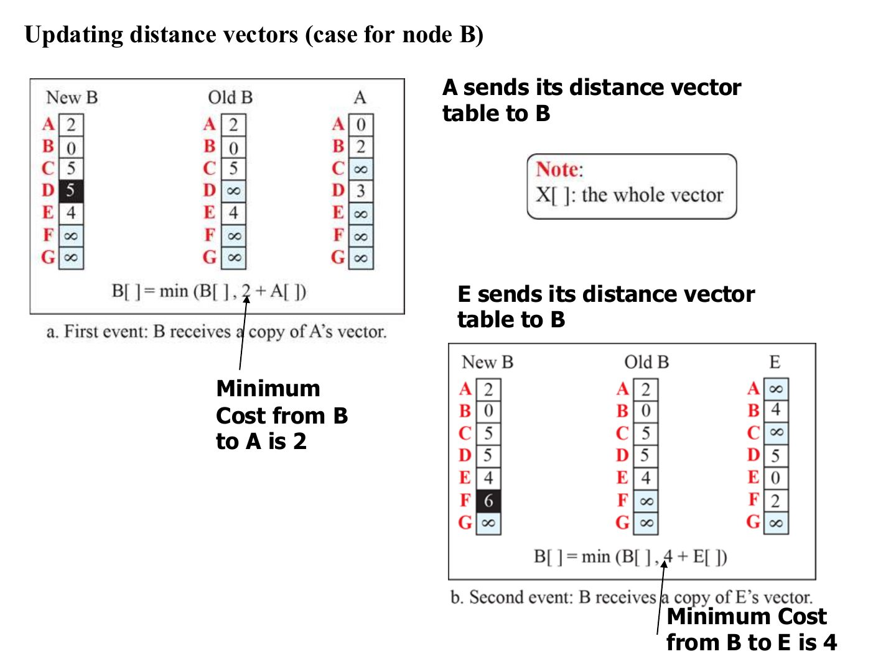
The Bellman-Ford update. When A sends its vector to B, B updates each entry: B[x] = min(B[x], cost(B to A) + A[x]). B–A costs 2 and A can reach D at cost 3, so B learns D at cost 5 (it had ∞). When E sends its vector, B[x] = min(B[x], 4 + E[x]), and B learns F at cost 6. In words: my new cost to x is the cheaper of what I already have, or the cost to my neighbour plus the neighbour’s cost to x.
B–A costs 2 and A’s cost to D is 3. B currently has D at ∞. After A’s update, B’s cost to D is:
State the Bellman-Ford update rule used in distance-vector routing.
Dx(y) = min over neighbours v of [c(x, v) + Dv(y)]: the cost from x to y is the cheapest of “cost to a neighbour plus that neighbour’s advertised cost to y”, compared with the current value.
B has F at cost 9. E (B–E cost 4) advertises F at 2. B’s new cost to F is:
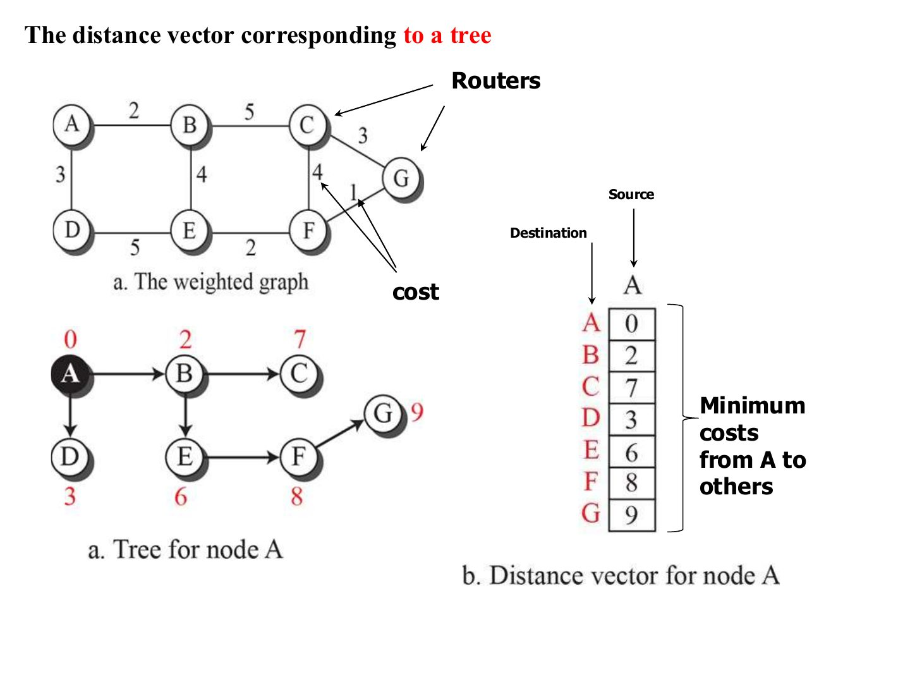
After enough rounds, each node’s vector holds its true least costs. For A: B 2, C 7, D 3, E 6, F 8, G 9. These form a least-cost tree rooted at A. For example, A to G costs 9 via A–B–E–F–G (2 + 4 + 2 + 1).
In the slide’s graph, the least cost from A to G is:
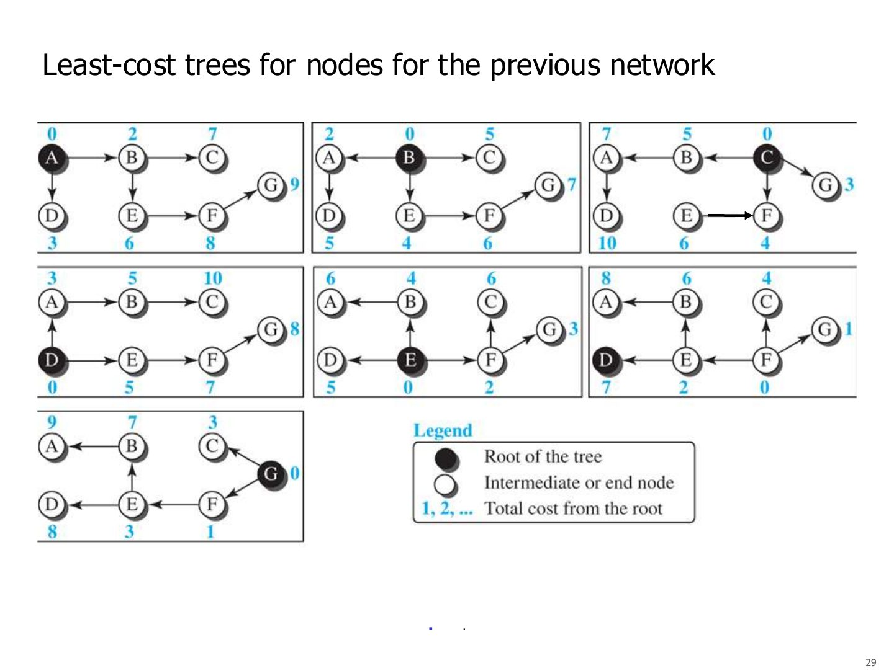
Every node ends up with its own least-cost tree, a different one for each node, since each tree is rooted at its own node. The routing table of each router simply records the first hop of each branch.
Every node has the same least-cost tree.
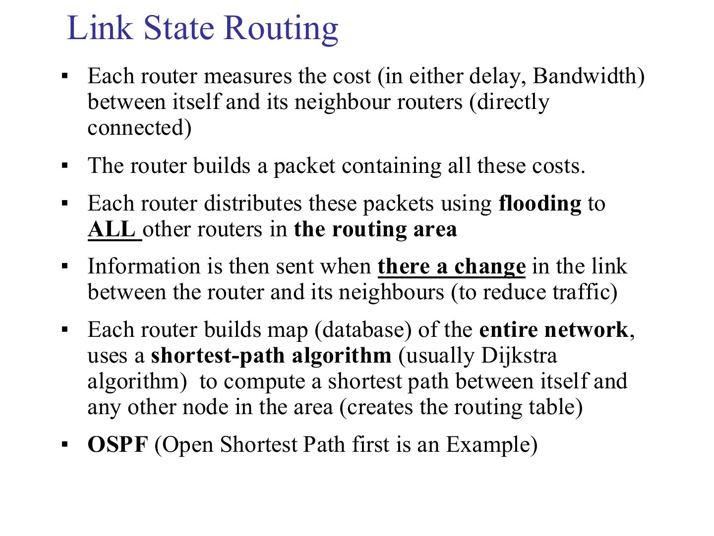
It puts these costs into a packet, the link-state packet (LSP), and sends it by flooding to all the other routers in the routing area, not just its neighbours. After the first flood, it sends a new LSP only when one of its links changes, to reduce traffic. From all the LSPs it receives, each router builds a map of the entire network (the link-state database) and runs a shortest-path algorithm, usually Dijkstra’s, to compute the shortest path from itself to every other node, which gives its routing table. OSPF (Open Shortest Path First) is the standard example.
Which is a link-state protocol?
In link-state routing, each router sends its link costs to its neighbours only.
When does a link-state router send a new LSP after the first one?
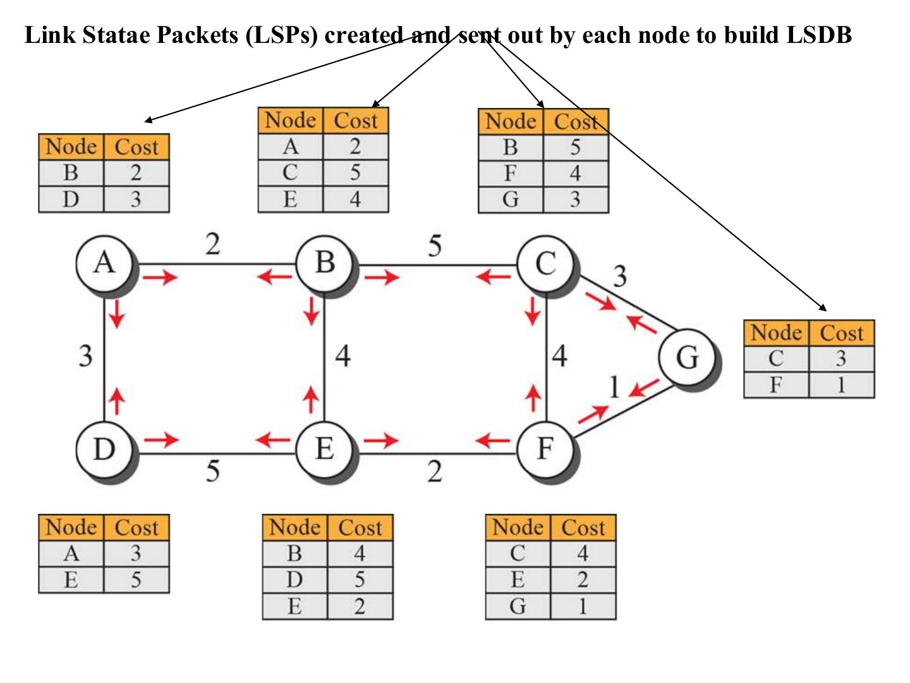
Each node’s LSP lists its neighbours and the cost to each: for example, A’s LSP says “B at 2, D at 3”. Every LSP is flooded to all nodes, so everyone learns every link.
What does a link-state packet (LSP) contain?
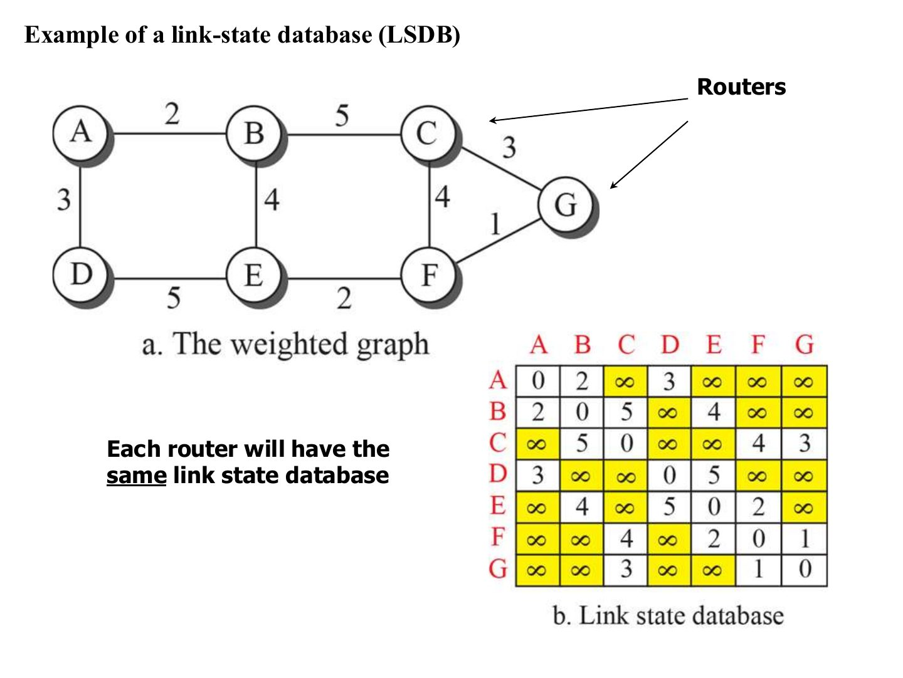
Because every router receives every LSP, every router ends up with the same link-state database (LSDB): here a 7 × 7 table holding the cost between every pair of directly connected nodes, which is the whole graph. Each router then runs Dijkstra on that same map to build its own least-cost tree, rooted at itself.
In link-state routing, every router ends up with the same link-state database.
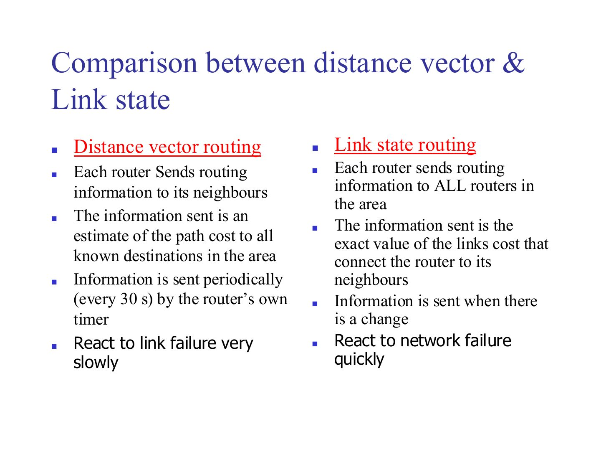
The comparison, point by point. Who gets the information: DV sends to its neighbours only; LS sends to all routers in the area (flooding). What is sent: DV sends its estimated cost to every known destination; LS sends the exact cost of its own links to its neighbours. When: DV sends periodically (for example every 30 s), on its own timer; LS sends when something changes. Reaction to failure: DV reacts slowly, because news spreads one neighbour at a time; LS reacts quickly, because the change is flooded to everyone at once.
Compare distance-vector and link-state routing (who receives updates, what is sent, when, and reaction to failure).
Distance vector: sends to neighbours only; sends its estimated cost to every known destination; periodically (e.g. every 30 s); reacts to failures slowly. Link state: floods to all routers in the area; sends the exact cost of its own links to its neighbours; only when something changes; reacts to failures quickly.
Which reacts faster to a link failure?
In distance vector routing, the information sent is:
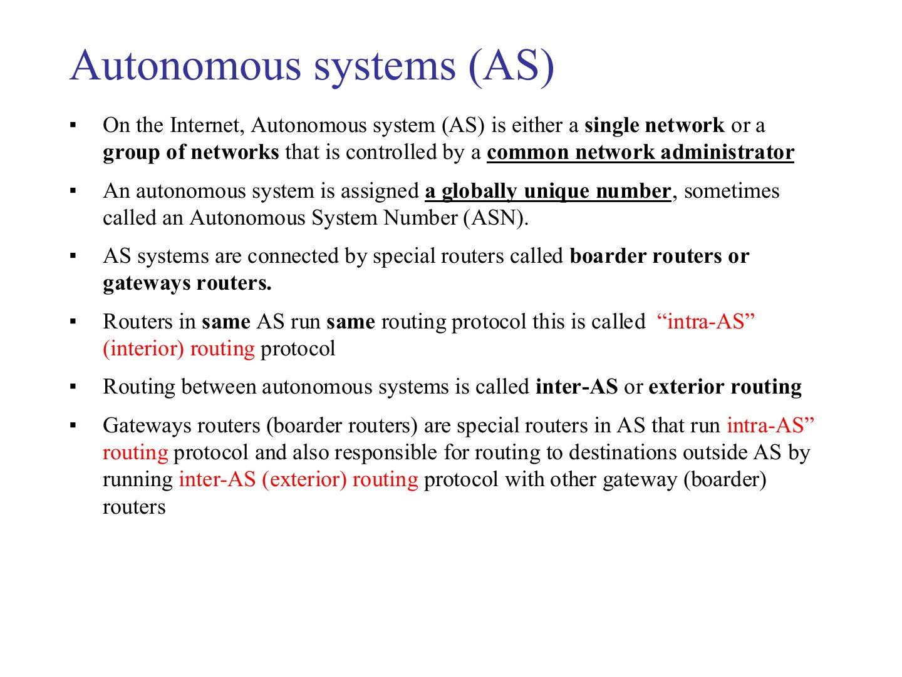
An autonomous system (AS) is a single network or a group of networks under the control of one common administrator (for example one ISP or one large company). Each AS has a globally unique number, the ASN.
ASs are connected by special routers called border (or gateway) routers. All routers inside the same AS run the same routing protocol, called intra-AS (interior) routing. Routing between ASs is called inter-AS (exterior) routing.
Routing between autonomous systems is called:
An autonomous system is:
Which routers run both interior and exterior routing protocols?
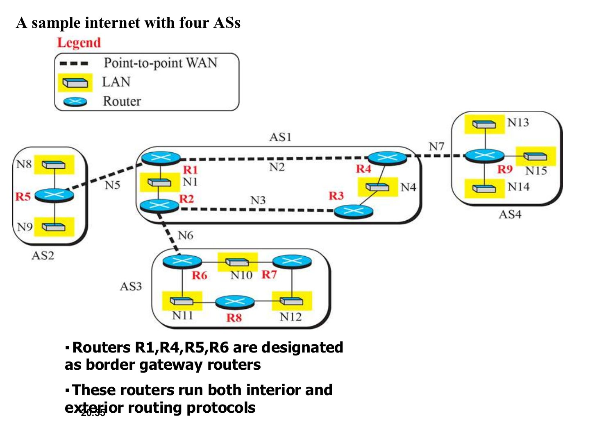
In the sample internet, four ASs (AS1 to AS4) are joined by point-to-point WAN links. R1, R4, R5 and R6 are the border routers: they run both the interior protocol of their AS and the exterior protocol between ASs. All other routers run only their AS’s interior protocol.
In the four-AS example, which are border routers?
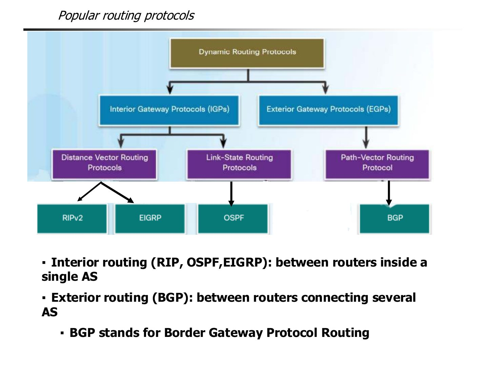
Interior routing protocols work between routers inside one AS: RIP and EIGRP (distance vector) and OSPF (link state). Exterior routing works between routers connecting different ASs: BGP, the Border Gateway Protocol, which is a path-vector protocol. It is the only exterior protocol you need to know: the B stands for Border.
Memory trick Only one exterior protocol to know: BGP, the B is for Border.
Which protocol routes between autonomous systems?
EIGRP is a: